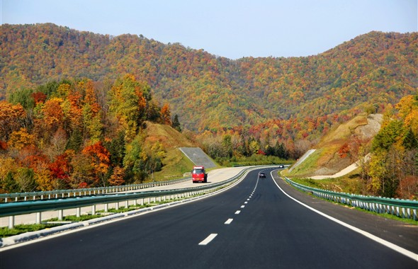
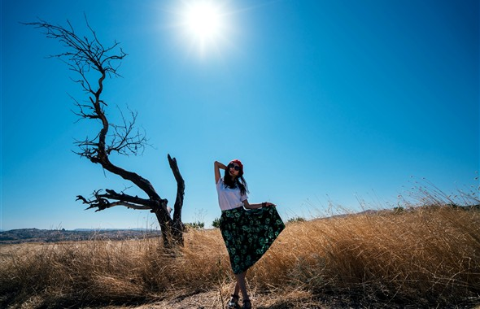

-
国内外最美的名山都在这里 等待着你的攀登与征服
如果你因为不安而频频回首，不如尝试去翻越每一个山丘。“会当凌绝顶，一览众山小。”
More >>
不登山，怎能说去过张家界
每年5、10月是珠峰登顶的最佳时机，这段时间大本营里驻扎着来自全世界的登山好手 -
一马向前 全球最适合“策马奔腾”的骑马地
在发明蒸汽小火车之前，人类接触到的最快交通工具就是“马”，虽然现在不再需要靠马来体现速度的时代了，但骑马这项运动，被看成一种品味和生活方式。
More >>
策马驰骋，看马背上的英勇少年
骑马奔驰是坝上的拍摄节目了 -
知道吗 这里是情侣不会分手的浪漫之地
也许平时的你羞于将甜言蜜语说出口，那么听我的，带她来这儿，无需多言，紧紧地握着她的手，感受两个人彼此的心跳，便是天长地久。
More >>
牛哥牛嫂的爱情故事更使得天河山成为以爱情为主题的游览胜地
在今天，杭州西湖依然是爱人们的天堂，约会的胜地 -
秋色无边 最不容错过的赏秋地
生活在大城市的钢筋水泥丛林中，除了街边梧桐飘落的黄叶外，似乎就无法体会到深秋景色的美妙了。在这个季节，地球上其实还有许多地方，有着更倾国倾城的秋叶美景。
More >>
雪雪乡公路和虎峰岭高速公路段国庆期间原五花山色特别迷人，仿佛走在画廊里
圆了我秋天梦想的“中国最美的黄金旅游走廊” -
最美的风景在路上 总有一条自驾路给你说走就走
最美的风景在路上，这是给你的爱车最棒的情话。无论是坦坦无垠的草原，还是笔直无尽的公路，或是满是泥泞的小道，只要你的心够狂野，要出发，没有什么可以阻挡你接受这沿途的馈赠。
More >>
美国加州一号公路被誉为世界上最神奇最美丽的公路，为全球10大最美公路之一
从内夫谢伊尔到费特希耶，最好选择自驾，不然感受不到土耳其的夏天……